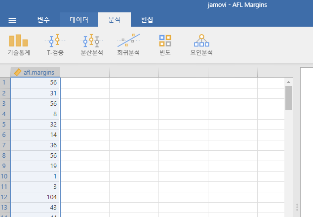
4 기술 통계량
새로운 데이터 세트를 받을 때 가장 먼저 해야 할 일 중 하나는 데이터를 간결하고 쉽게 이해할 수 있는 방식으로 요약하는 방법을 찾는 것입니다. 이것이 바로 기술 통계량의(추론 통계량과는 다른) 역할입니다. 사실, 많은 사람들에게 “통계”라는 용어는 곧 기술 통계량을 의미하기도 합니다. 이번 장에서는 이 주제를 다룰 예정이지만, 구체적인 내용으로 들어가기 전에 기술 통계량이 왜 필요한지 간단히 살펴보겠습니다. 이를 위해 aflsmall_margins.csv 파일을 열고, 이 파일에 저장된 변수를 살펴보겠습니다(Figure 4.1 참고).
사실 여기에는 하나의 변수, afl.margins만 있습니다. 이번 장에서는 이 변수를 중심으로 다룰 예정이니, 이 변수가 무엇인지 설명하는 것이 좋겠습니다. 이 책의 대부분 데이터 세트와는 달리, 이 데이터는 실제 데이터로, 호주 풋볼 리그(AFL)와 관련되어 있습니다.1 afl.margins 변수는 2010 시즌 동안 열린 176개의 홈 및 원정 경기에서 이긴 팀의 점수 차(포인트 수)를 나타냅니다.
단순히 데이터를 “살펴보는 것”만으로는 데이터를 제대로 이해하기 어렵습니다. 데이터를 실제로 이해하려면 기술 통계량(이번 장에서 다룸)을 계산하고, 좋은 그래프를 그려야 합니다(Chapter 5). 기술 통계량이 두 주제 중 더 간단하기 때문에 여기서부터 시작하겠습니다. 하지만 설명하려는 데이터가 어떤 모습인지 감을 잡을 수 있도록 afl.margins 데이터의 히스토그램을 먼저 보여드리겠습니다(Figure 4.2 참고). 히스토그램을 그리는 방법에 대해서는 다음 장(Section 5.1)에서 자세히 다룰 예정입니다. 지금은 히스토그램을 보고 afl.margins 데이터를 비교적 해석하기 쉬운 방식으로 나타냈다는 점만 알아두면 충분합니다.
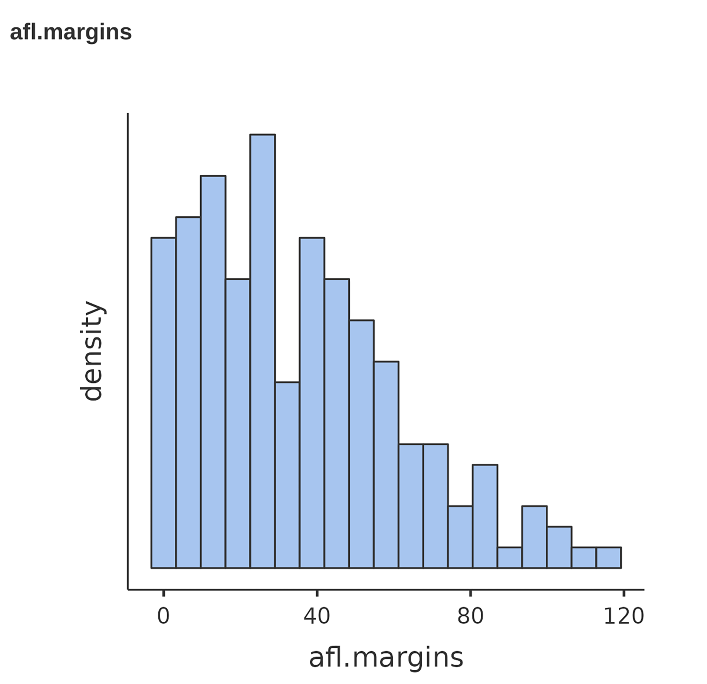
실습: AFL Margins 데이터 불러오기
Tip 3.1 을 수행하였으면 lsj-data 모듈이 설치되어 있을 것입니다. 이 모듈이 설치되어 있으면 이 책의 데이터를 데이터 라이브러리에서 쉽게 불러올 수 있습니다.
‘파일’-‘열기’-’데이터 라이브러리’를 메뉴에서 선택합니다. 그러면 ’learning statistics with jamovi’라는 폴더가 보일 것입니다. 이 폴더를 선택합니다.
그러면 이 책에서 제공하는 데이터 목록이 나열됩니다. 데이터는 사용되는 장 순서에 따라 배열되어 있습니다.
’AFL Margins’를 선택합니다. 그러면 Figure 4.1 같은 데이터가 스프레드시트 뷰에 나타납니다.
4.1 중심 경향 측정
데이터의 히스토그램을 그려보는 것은(Figure 4.2 참고) 데이터가 전달하려는 “요점”을 효과적으로 전달하는 훌륭한 방법입니다. 그러나 데이터를 몇 가지 간단한 “요약” 통계량으 압축하는 것도 매우 유용할 때가 많습니다. 대부분의 상황에서 가장 먼저 계산하고 싶은 것은 중심 경향 측정값입니다. 즉, 데이터의 “평균” 또는 “중간” 값이 어디에 있는지 알고자 하는 것입니다. 가장 흔히 사용되는 세 가지 측정값은 평균(mean), 중앙값(median), 최빈값(mode)입니다. 각 척도를 차례로 설명한 뒤, 각 척도가 유용한 상황에 대해 논의하겠습니다.
4.1.1 평균(mean)
평균(mean)은 우리가 잘 알고 있는 그 평균값입니다. 모든 값을 더한 다음 값의 개수로 나누면 됩니다. 예를 들어, 첫 다섯 개의 AFL 승리 점수 차가 56, 31, 56, 8, 32라면, 평균은 다음과 같이 계산됩니다:
\[\frac{56 + 31 + 56 + 8 + 32}{5} = \frac{183}{5} = 36.60\]
물론, 이런 평균의 정의는 누구에게나 익숙한 개념일 것입니다. 평균은 일상생활에서 자주 사용되기 때문에 별로 새로울 것이 없습니다.
평균 개념이 이미 잘 알려져 있기 때문에, 이번 기회에 통계학에서 사용하는 수학적 표기법을 소개하고 jamovi에서 이 계산을 어떻게 하는지 논의하겠습니다.
먼저, \(N\)이라는 표기법을 소개합니다. 이는 우리가 평균을 계산하려는 관측값의 개수를 나타냅니다(이 경우 \(N = 5\)). 다음으로, 개별 관측값에 레이블을 붙일 필요가 있습니다. 관습적으로 \(X\)를 사용하며, 첨자를 사용하여 특정 관측값을 나타냅니다. 예를 들어, 첫 번째 관측값은 \(X_1\), 두 번째는 \(X_2\), 마지막은 \(X_N\)으로 나타냅니다. 즉, i번째 관측값은 \(X_i\)로 나타냅니다.
Table 4.1 은 afl.margins 변수에 있는 5개의 관측값과 해당 관측값을 나타내는 수학적 기호 및 실제 값을 정리한 표입니다.
| 관찰 | 기호 | 관찰된 값 |
|---|---|---|
| 게임 1 승리 마진 | \( X_1 \) | 56점 |
| 게임 2 승리 마진 | \( X_2 \) | 31점 |
| 게임 3 승리 마진 | \( X_3 \) | 56점 |
| 게임 4 승리 마진 | \( X_4 \) | 8점 |
| 게임 5 승리 마진 | \( X_5 \) | 32점 |
이제 평균을 수식으로 표현해보겠습니다. 전통적으로 평균은 \(\bar{X}\)로 나타냅니다. 평균 계산은 다음과 같은 수식으로 표현할 수 있습니다:
\[\bar{X}=\frac{X_1 + X_2 ... + X_{N-1} + X_{N}}{N}\]
이 수식은 정확하지만 너무 길기 때문에, 합(sum) 기호 \(\sum\)을 사용해 이를 간략화합니다. 예를 들어, 첫 다섯 개의 관측값을 더하려면 \(X_1 + X_2 + X_3 + X_4 + X_5\)로 길게 쓸 수도 있지만, 합 기호를 사용하여 다음과 같이 간략히 쓸 수 있습니다:
\[\sum_{i=1}^{5} X_i\]
이는 문자 그대로 읽으면 “i가 1에서 5까지의 모든 값에 대해 \(X_i\)를 더한 합”으로 해석됩니다. 이를 통해 평균 수식을 간단히 다음과 같이 쓸 수 있습니다:
\[\bar{X}=\frac{1}{N}\sum_{i=1}^{N}X_i\]
사실 이런 수학적 표기법은 평균 개념을 명확히 설명하는 데 크게 도움되지 않습니다. 이는 단순히 “모든 값을 더한 뒤, 전체 항목 수로 나눈다”라는 말을 수학적으로 표현한 것뿐입니다. 하지만 이러한 세부사항을 설명한 이유는 이 책에서 사용하는 표기법(\(\bar{X}\), \(\sum\), \(X_i\), \(N\))에 대한 이해를 돕기 위해서입니다. 이러한 기호는 책 전반에서 자주 사용되므로, 이를 읽고 이해할 수 있어야 합니다.
4.1.2 jamovi에서 평균 계산하기
이제 수학적 개념을 배웠으니, 컴퓨터를 사용해 계산하는 방법을 알아보겠습니다. 관측값이 많아지면 컴퓨터를 사용하는 것이 훨씬 더 간편합니다. jamovi를 사용해 평균을 계산하려면, 먼저 ‘기술통계(Exploration)’ 메뉴를 클릭한 뒤 ‘기술통계(Descriptives)’를 선택합니다. 그런 다음 왼쪽 ’기술통계’ 패널에서 afl.margins 변수를 선택하고 ‘오른쪽 화살표’를 클릭하여 ’변수(Variables)’ 상자로 이동시킵니다. 이 작업을 하면 오른쪽 결과 패널에 선택된 변수에 대한 기본 기술 통계량이 표로 나타납니다(Figure 4.3 참고).
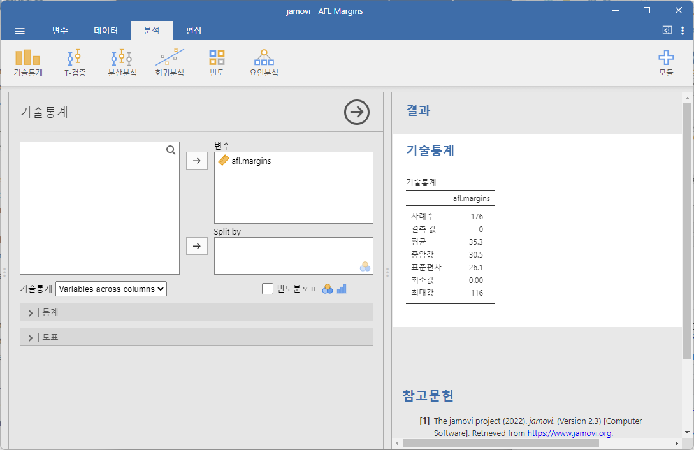
Figure 4.3 에서 볼 수 있듯이, afl.margins 변수의 평균값은 35.30입니다. 제공된 정보에는 총 관측값 수(N=176), 결측값(없음), 중앙값, 최소값 및 최대값도 포함되어 있습니다.
4.1.3 중앙값 (Median)
중심 경향을 나타내는 두 번째 측정값은 중앙값(median)입니다. 중앙값은 평균보다 설명하기 훨씬 간단합니다. 관측값 집합의 중앙값은 단순히 “가운데 값”입니다. 예를 들어, 첫 다섯 번의 AFL 경기 점수 차가 \(56\), \(31\), \(56\), \(8\), \(32\)였다고 가정해 봅시다. 중앙값을 찾으려면 이 숫자들을 오름차순으로 정렬합니다: 8, 31, 32, 56, 56.
이 정렬된 목록에서 가운데 값인 32가 중앙값이라는 것을 쉽게 알 수 있습니다(더 명확히 보이도록 굵게 표시했습니다). 간단하죠? 그런데 만약 첫 6개의 경기 결과를 분석하고 싶다면 어떻게 해야 할까요? 여섯 번째 경기의 점수 차가 14점이었다고 하면, 정렬된 목록은 다음과 같습니다: 8, 14, 31, 32, 56, 56.
여기서는 가운데 값이 두 개(31과 32)가 됩니다. 중앙값은 이 두 숫자의 평균으로 정의되므로, 중앙값은 \(31.5\)입니다. 이처럼 값이 많아지면 손으로 계산하는 것은 매우 번거롭습니다. 실제로는 데이터를 정렬하고 중간 값을 찾는 대신, 컴퓨터를 이용하여 계산을 합니다. 예를 들어, jamovi는 afl.margins 변수에 대해 중앙값을 \(30.50\)으로 계산해 주었습니다(Figure 4.3 참고).
4.1.4 평균과 중앙값: 차이는 무엇일까요?
평균과 중앙값을 계산하는 방법을 아는 것만으로는 충분하지 않습니다. 각 측정값이 데이터에 어떤 의미를 가지며, 언제 각각을 사용하는 것이 적합한지 이해해야 합니다. 이 차이를 Figure 4.4 에서 확인할 수 있습니다. 평균은 데이터 집합의 “무게중심”이고, 중앙값은 데이터의 “중간값”입니다. 어떤 것을 사용할지는 데이터의 종류와 분석 목표에 따라 달라집니다. 대략적인 가이드라인은 다음과 같습니다:
- 명목척도(Nominal Scale) 변수인 경우, 평균이나 중앙값을 사용하는 것은 적절하지 않습니다. 평균과 중앙값 모두 변수에 할당된 숫자가 의미가 있어야 하기 때문입니다. 숫자 체계가 임의적이라면 [최빈값(Mode)]을 사용하는 것이 더 나을 수 있습니다.
- 서열척도(Ordinal Scale) 변수인 경우, 중앙값이 평균보다 적합합니다. 중앙값은 데이터의 순서 정보(즉, 어떤 값이 더 큰지)에만 의존하며, 구체적인 숫자에는 의존하지 않으므로 서열척도 데이터에 적합합니다. 반면, 평균은 관측값에 할당된 구체적인 숫자 값을 사용하기 때문에 서열척도 데이터에는 적합하지 않습니다.
- 구간척도(Interval Scale)나 비율척도(Ratio Scale) 변수인 경우, 평균과 중앙값 모두 일반적으로 사용 가능합니다. 어떤 것을 선택할지는 분석 목표에 따라 다릅니다. 평균은 데이터의 모든 정보를 활용하는 장점이 있지만(데이터가 많지 않을 때 유용), 극단적인 값에 매우 민감합니다.
이 마지막 점을 조금 더 확장해 봅시다. 히스토그램이 비대칭일 때(예: 왜도와 첨도 참고), 평균과 중앙값 사이에는 체계적인 차이가 생깁니다. 이를 Figure 4.4 에서 확인할 수 있습니다. 중앙값(오른쪽)은 히스토그램의 “본체”에 더 가까운 위치에 있는 반면, 평균(왼쪽)은 “꼬리”(극단값이 있는 쪽)로 끌려갑니다.
구체적인 예를 들어보겠습니다. Bob(소득 $50,000), Kate(소득 $60,000), Jane(소득 $65,000)이 한 테이블에 앉아 있다고 가정합니다. 이때 테이블의 평균 소득은 $58,333이고, 중앙값은 $60,000입니다. 여기에 Bill(소득 $100,000,000)이 합류하면, 평균 소득은 $25,043,750으로 급증하지만 중앙값은 $62,500으로만 증가합니다. 테이블의 전체 소득 규모를 분석하려면 평균이 적절할 수 있습니다. 하지만 테이블에서 “전형적인 소득”을 알고 싶다면 중앙값이 더 적합한 선택이 될 것입니다.
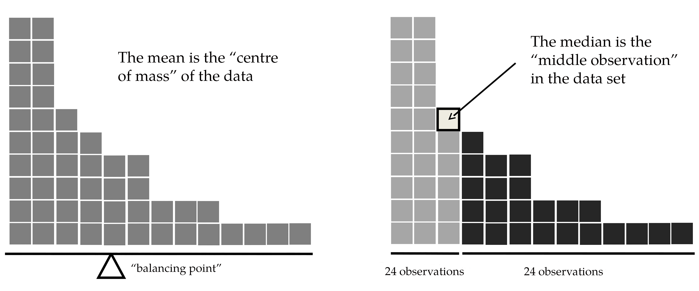
실습: 어느 마을의 가구 소득의 평균과 중앙값
5 가구가 살고 있는 마을을 생각해 보자. 각각의 가구의 연소득은 1, 2, 3, 4, 5억이다. 그러면 이 마을의 평균 소득과 중위 소득(중앙값)은 얼마일까? jamovi를 이용하여 구해 보자.
- ‘파일’-’새로운’을 메뉴에서 선택하여 새로운 스프레드시트 화면을 만듭니다.
- A 열에 마을의 가구 소득 1, 2, 3, 4, 5를 차례로 입력합니다.
- A 열을 더블클릭하여 변수명을 ’소득’으로, ’척도 유형’을 ’연속변수’로, ’데이터 유형’을 ’소수’로 바꿉니다. 그리고 위 화살표를 클릭하여 스프레드시트로 돌아옵니다.
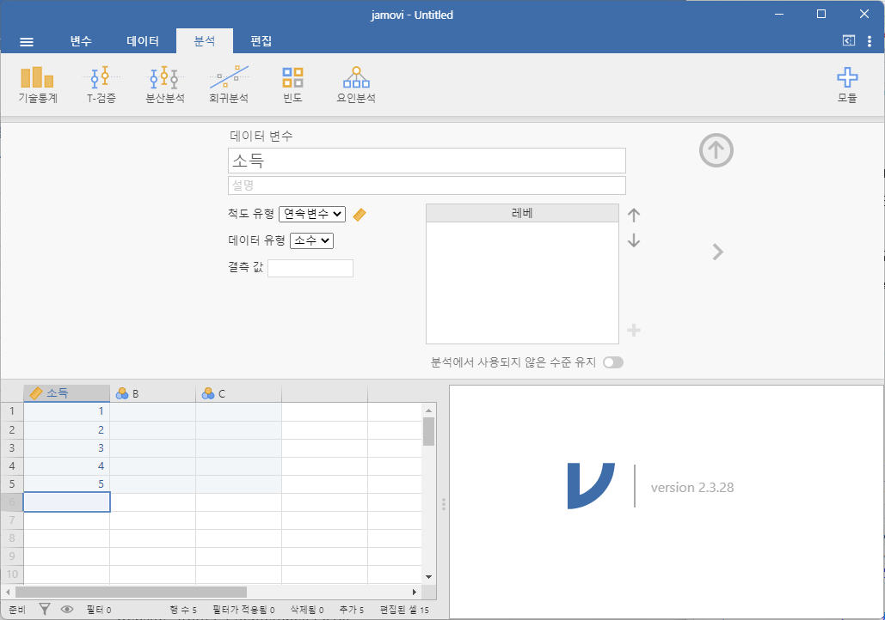
- ‘기술통계’-‘기술통계’ 메뉴를 선택합니다. 그리고는 ‘소득’을 ’변수’ 상자에 넣습니다. 평균과 중앙값을 확인해 봅니다.
- 이 마을에 연간 100 억을 버는 부자 가구가 이사왔다고 하죠. 그러면 이 마을의 가구 소득의 평균과 중앙값은 어떻게 바뀔까요?
- 스프레드시트로 돌아가서 ‘소득’ 열의 데이터를 ‘B’ 열에 복사합니다. 그리고 ‘B’ 열의 마지막에 100을 입력합니다.
- B 열을 더블클릭하여 변수명을 ’이사 후 소득’으로, ’척도 유형’을 ’연속변수’로, ’데이터 유형’을 ’소수’로 바꿉니다. 그리고 위 화살표를 클릭하여 스프레드시트로 돌아옵니다.
- ‘기술통계’-‘기술통계’ 메뉴를 선택합니다. 그리고는 ‘이사 후 소득’을 ’변수’ 상자에 넣습니다. 평균과 중앙값을 확인해 봅니다.
- ’이사 후 소득’의 평균과 중앙값을 이전 ’소득’의 평균과 중앙값과 비교해 봅시다. 중앙값은 크게 변하지 않았는데, 평균은 6 배 이상 차이 나는 것을 볼 수 있습니다. 왜 이런 결과가 나왔을까요?
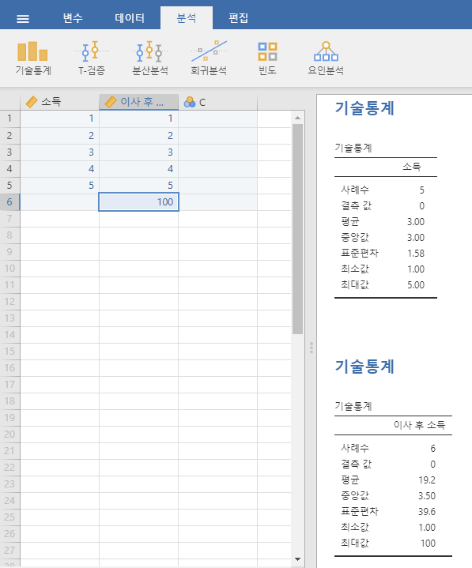
4.1.5 실제 사례
평균과 중앙값의 차이에 주의를 기울여야 하는 이유를 실제 사례에서 살펴봅시다. 제가 자주 기자들이 과학 및 통계 지식이 부족하다고 비판하곤 하지만, 잘한 점은 인정해야겠죠. 여기 Michael Janda가 2010년 9월 24일 ABC 뉴스 웹사이트에 게재한 훌륭한 기사2가 있습니다.
지난 몇 주 동안 Commonwealth Bank의 고위 임원들은 호주의 주택가격과 소득 대비 가격 비율을 호주와 비슷한 국가들과 비교하는 발표 자료를 가지고 세계 곳곳을 다녔다. “주택 구입 여건은 지난 5~6년 동안 사실상 정체 상태였습니다,” 라고 CommSec의 수석 이코노미스트 Craig James는 말했다.
지난 몇 년 동안 호주 주택 시장에서 벌어진 상황을 조금이라도 알고 있는 사람, 특히 주택담보대출을 갚고 있거나, 대출을 원하거나, 임대료를 내는 사람들에게는 이런 주장은 매우 놀라운 소식일 것입니다. 다시 기사로 돌아가 봅시다.
CBA는 그래프, 숫자, 국제 비교를 통해 자사가 생각하는 주택시장 비관론자들과 전쟁을 벌였습니다. 발표 자료에서 은행은 호주의 주택가격이 소득에 비해 상대적으로 비싸다는 주장을 반박하며, 주요 도시에서 소득 대비 주택가격의 비율이 5.6이고 전국적으로는 4.3이라고 주장하고 있습니다. 또한 샌프란시스코와 뉴욕의 비율은 7, 오클랜드는 6.7, 밴쿠버는 9.3이라고 덧붙입니다.
매우 좋은 소식처럼 들리네요! 하지만 기사는 이어서 다음과 같은 관찰을 덧붙입니다.
많은 분석가들은 은행이 오도된 수치와 비교를 사용하고 있다고 말합니다. CBA 발표 자료의 4페이지의 그래프와 표의 출처 정보를 읽어보면 국제 비교와 관련된 추가적인 출처로 Demographia가 있다는 것을 알 수 있습니다. 하지만 Commonwealth Bank가 Demographia의 호주의 소득 대비 주택가격 비율을 분석에 사용했다면, 5.6이나 4.3이 아닌 9에 가까운 수치를 얻었을 것입니다.
음… 꽤 심각한 불일치군요. 한쪽에서는 9라고 말하고, 다른 쪽에서는 4~5라고 말합니다. 그러면 둘의 중간쯤으로 타협하고 진실이 그 사이 어딘가에 있다고 말해야 할까요? 절대 아닙니다! 이것은 정답과 오답이 명확히 존재하는 상황입니다. Demographia가 옳고, Commonwealth Bank는 틀렸습니다.
Commonwealth Bank의 소득 대비 주택가격 수치에서 명백한 문제는 소득의 평균과 주택 가격의 중앙값을 비교했다는 점입니다(반면 Demographia의 수치는 소득 중앙값과 주택가격 중앙값을 비교했습니다). 중앙값은 중간 지점으로, 극단적인 값들을 효과적으로 제거합니다. 이는 평균 소득과 자산 가격이 호주의 최고 소득자들를 포함하기 때문에 일반적으로 더 높게 나타나는 이유입니다. 다시 말해, Commonwealth Bank의 수치는 Ralph Norris의 수백만 달러 급여는 소득 측면에서 포함하지만, 그의 (아마도) 매우 비싼 집은 부동산 가격 수치에서 제외하여, 중간 소득 호주인들의 소득 대비 주택가격 비율을 과소평가한 것입니다.
더 잘 설명할 방법이 없군요. Demographia가 계산한 방식이 맞습니다. 은행의 방식은 틀렸습니다. 그러면 왜 Commonwealth Bank처럼 정량적 데이터를 매우 세련되게 다루는 조직이 이런 초보적인 실수를 저질렀을까요? 그들의 생각을 들여다볼 특별한 통찰력은 없으니 확실히 말할 수는 없습니다. 하지만 기사는 다음과 같은 사실을 언급하는데, 이것이 관련이 있을 수도 있겠죠:
호주에서 가장 큰 주택 대출 기관인 Commonwealth Bank는 주택 가격 상승에 가장 큰 이해관계를 가지고 있습니다. 이 은행은 주택 담보 대출뿐만 아니라 많은 소규모 비즈니스 대출을 담보로 하여 호주 주택의 상당 부분을 사실상 소유하고 있습니다.
오, 이런.
4.1.6 최빈값 (Mode)
표본의 최빈값은 매우 간단합니다. 이는 가장 자주 나타나는 값을 의미합니다. AFL 데이터를 활용해 최빈값을 설명해 보겠습니다. 누가 가장 많은 결승전에 출전했는지 알아봅시다. aflsmall finalists 파일을 열어 afl.finalists 변수(Figure 4.5 참고)를 살펴보세요.
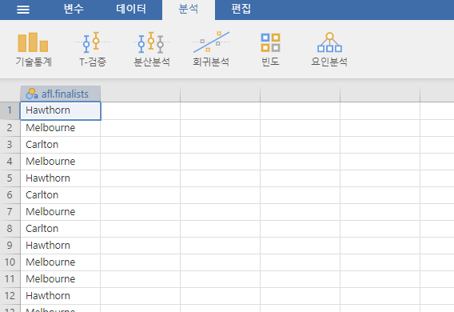
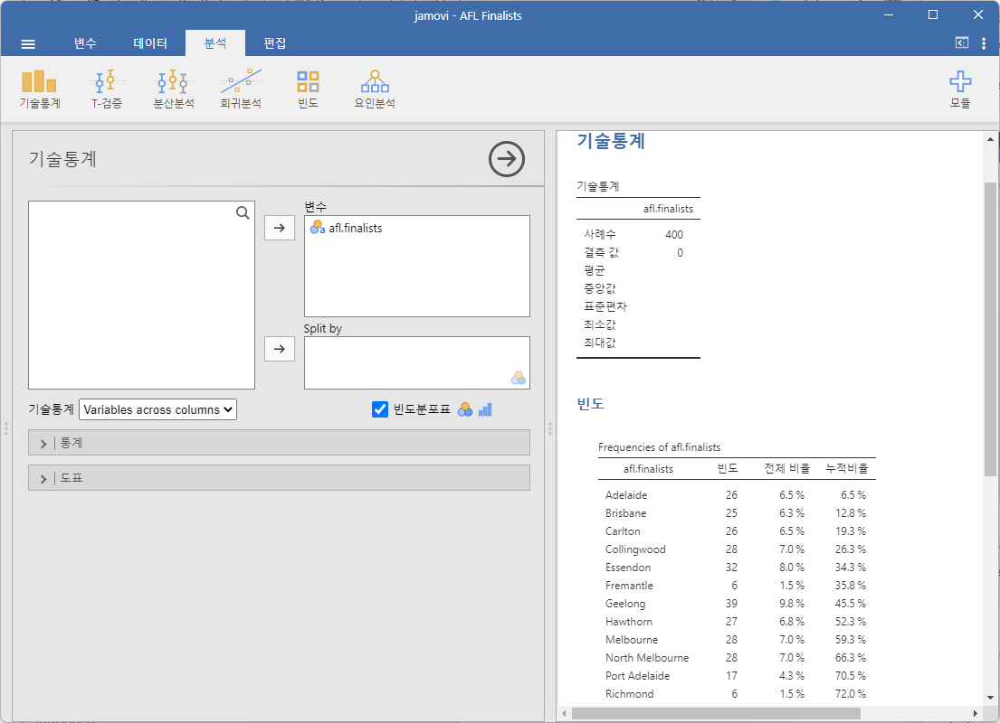
이 변수에는 1987년부터 2010년까지 열린 총 200번의 결승전에서 출전한 400개 팀 이름이 포함되어 있습니다. 우리는 이 400개의 항목을 모두 읽고 각 팀 이름이 리스트에서 등장한 횟수를 세어 빈도표를 만들 수 있습니다. 하지만, 이는 단조롭고 지루한 작업입니다. 이런 작업은 컴퓨터가 잘 처리하죠. 따라서 jamovi를 사용해 이를 처리해 보겠습니다. ‘기술통계’-‘기술통계’ 메뉴에서 ’빈도분포표(Frequency tables)’라고 표시된 작은 체크박스를 클릭하면 Figure 4.6 같은 결과를 얻을 수 있습니다.
이제 빈도표를 보면, 우리가 가진 24년간의 데이터에서 Geelong이 다른 팀들보다 결승전에 더 많이 출전했다는 것을 알 수 있습니다. 따라서 afl.finalists 데이터의 최빈값은 “Geelong”입니다. Geelong은 1987년부터 2010년까지 총 39번의 결승전에 출전하며 최다 기록을 세웠습니다. 또한, ‘기술통계’ 표에는 평균(mean), 중앙값(median), 최소값(minimum), 최대값(maximum)에 대한 결과가 계산되지 않았다는 점도 주목할 만합니다. afl.finalists 변수가 명목형 텍스트 변수이기 때문이며, 이러한 값들을 계산하는 것은 의미가 없습니다.
최빈값에 대해 한 가지 더 언급하자면, 최빈값은 명목형 데이터에서 주로 계산됩니다. 이는 평균과 중앙값이 이러한 변수에 대해 유용하지 않기 때문입니다. 하지만, 서열척도, 구간척도 또는 비율척도 변수에서도 최빈값이 필요한 상황이 있을 수 있습니다. 예를 들어, afl.margins 변수로 돌아가 봅시다. 이 변수는 명백히 비율척도 변수입니다(명확하지 않다면 Section 2.2 를 다시 읽어보세요). 대부분의 상황에서는 평균이나 중앙값이 중심 경향을 나타내는 데 적합합니다. 하지만 다음과 같은 시나리오를 생각해 보세요. 친구가 무작위로 선택한 풋볼 경기의 정확한 승리 점수 차를 맞추면 $50을 받고, 틀리면 $1을 잃는 내기를 제안합니다. “거의 맞힌” 경우에 대한 위로 상금은 없습니다. 정확히 맞춰야 합니다. 이 경우 평균과 중앙값은 전혀 도움이 되지 않으며, 최빈값을 기반으로 베팅해야 합니다.
jamovi에서 afl.margins 변수의 최빈값을 계산하려면 해당 데이터 세트로 돌아가 ‘기술통계’-‘기술통계’ 화면으로 이동하세요. ‘통계’ 섹션을 확장하고 ‘최빈값’이라고 표시된 체크박스를 클릭하면 ’기술통계’ 표에 최빈값이 표시됩니다(Figure 4.7 참고). 2010년 데이터에 따르면 3점 차를 선택하는 것이 가장 적합한 베팅이라고 제안합니다.
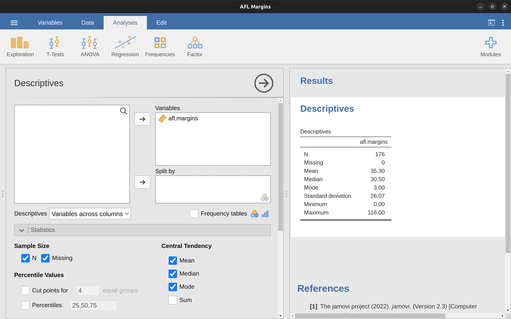
4.2 변동성 측정
지금까지 논의한 통계는 모두 중심 경향(central tendency)과 관련이 있었습니다. 즉, 데이터의 “가운데”나 “인기 있는” 값을 설명하는 데 초점이 있었습니다. 그러나 중심 경향만이 우리가 계산하고자 하는 요약 통계량이 아닙니다. 우리가 정말로 알고 싶은 또 다른 중요한 정보는 데이터의 변동성(variability)입니다. 즉, 데이터가 얼마나 “퍼져” 있는지, 관측값들이 평균(mean) 또는 중앙값(median)으로부터 얼마나 “멀리” 떨어져 있는지를 측정하는 것입니다. 여기서는 데이터를 구간척도(interval scale) 또는 비율척도(ratio scale)라고 가정하고, 계속해서 afl.margins 데이터를 사용할 것입니다. 이 데이터를 통해 다양한 변동성 측정 방법을 살펴보며, 각각의 장단점을 논의하겠습니다.
4.2.1 범위
범위(range)는 매우 간단합니다. 최대값에서 최소값을 뺀 값입니다. AFL 승리 점수 차 데이터에서 최대값은 116이고 최소값은 0입니다. 범위는 “변동성”을 정량화하는 가장 간단한 방법이지만, 가장 취약한 방법 중 하나이기도 합니다. 평균에 대한 논의에서 보았듯이, 요약 통계량은 강건성(robust)을 가져야 합니다. 즉, 데이터에 몇 개의 극단적인 특이치(outliers)가 있더라도 통계가 과도하게 영향을 받지 않아야 합니다. 예를 들어, 다음과 같은 극단값을 포함하는 변수를 고려해 봅시다.
-100, 2, 3, 4, 5, 6, 7, 8, 9, 10
이 경우, 범위는 110이지만 극단값을 제거하면 범위는 단 8에 불과합니다. 따라서 범위는 특이치에 강건하지 않습니다.
4.2.2 사분범위
사분범위(interquartile range, IQR)는 범위와 비슷하지만, 최대값과 최소값 간의 차이가 아니라, 25번째 백분위수(25th percentile)와 75번째 백분위수(75th percentile) 간의 차이를 계산합니다. 데이터의 10번째 백분위수(percentile)는 데이터의 10%가 그 값보다 작은 수중 가장 작은 수입니다. 사실, 이미 이 개념을 접했습니다. 데이터의 중앙값은 50번째 백분위수입니다! jamovi에서는 ‘기술통계’-‘기술통계’-‘통계’ 화면에서 ‘백분위’ 체크박스를 클릭하여 25번째, 50번째, 75번째 백분위수를 쉽게 확인할 수 있습니다.
Figure 4.8 을 보면 50번째 백분위수가 중앙값과 동일하다는 것을 알 수 있습니다. 그리고 \(50.50 - 12.75 = 37.75\)라는 계산을 통해, 2010년 AFL 승리 점수 차 데이터의 사분범위가 37.75임을 알 수 있습니다. 범위를 해석하는 것은 쉽지만, 사분범위를 해석하는 것은 조금 더 어렵습니다. 사분범위를 가장 간단하게 생각하는 방법은 다음과 같습니다. 사분범위는 데이터의 “중간 부분의 절반”이 차지하는 범위입니다. 즉, 데이터의 4분의 1은 25번째 백분위수 아래에 있고, 또 다른 4분의 1은 75번째 백분위수 위에 있습니다. 나머지 “중간 부분의 절반”의 데이터는 이 두 값 사이에 위치합니다. 사분범위는 이 중간 절반의 범위를 나타냅니다.
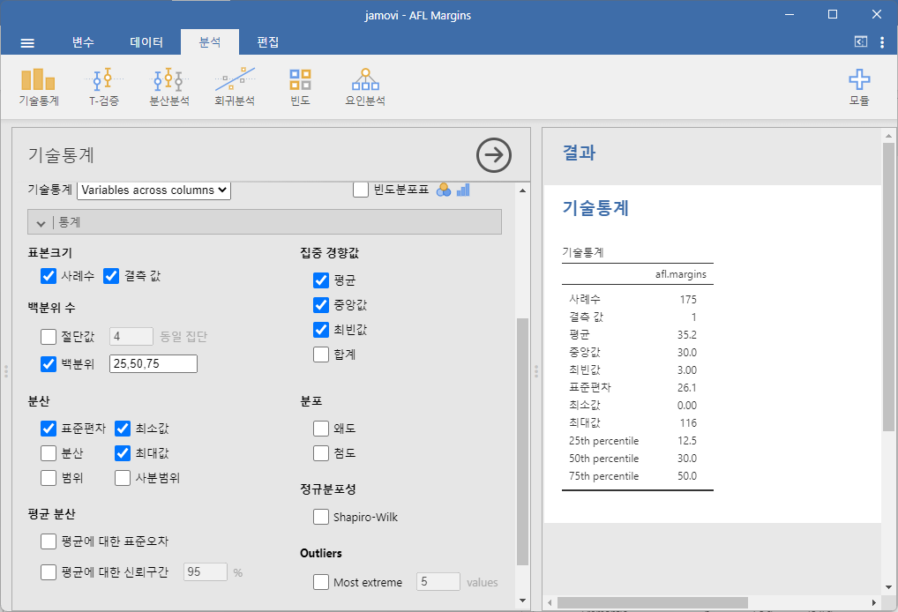
4.2.3 평균 절대 편차 (Mean absolute deviation)
앞서 살펴본 범위와 사분범위는 모두 데이터의 백분위수를 통해 변동성을 측정하는 방법에 의존합니다. 그러나 이것이 변동성을 생각하는 유일한 방법은 아닙니다. 또 다른 접근법은 의미 있는 기준점(일반적으로 평균 또는 중앙값)을 선택하고, 이 기준점에서의 “전형적인” 편차를 보고하는 것입니다. 여기서 “전형적인” 편차란 무엇을 의미할까요? 일반적으로 편차의 평균(mean) 또는 중앙값(median)을 의미합니다. 실질적으로, 이는 두 가지 다른 측정값을 생성합니다. 하나는 (평균에서의) “평균 절대 편차”(mean absolute deviation)이고, 다른 하나는 (중앙값에서의) “중앙 절대 편차”(median absolute deviation)입니다. 통계학에서는 중앙값을 기준으로 한 측정값이 더 많이 사용되며 더 우수한 것으로 여겨지는 것 같습니다. 그러나 심리학에서는 평균을 기준으로 한 측정값이 가끔 사용됩니다. 이 섹션에서는 첫 번째에 대해 논의하고, 두 번째는 이후에 다루겠습니다.
이전 문단이 다소 추상적으로 들렸다면, 평균 절대 편차를 조금 더 천천히 살펴보겠습니다. 이 측정값의 유용한 점은 이름이 실제 계산 방법을 그대로 설명한다는 점입니다. AFL 승리 점수 차 데이터를 다시 생각해 봅시다. 우선 5개의 경기만 있다고 가정하고, 승리 점수 차가 56, 31, 56, 8, 32라고 해봅시다. 이 계산은 기준점(여기서는 평균)을 기준으로 한 편차를 살펴보는 것에 의존하므로, 먼저 평균 \(\bar{X}\)를 계산해야 합니다. 이 5개의 관측값에 대한 평균은 \(\bar{X} = 36.6\)입니다. 다음으로 각 관측값 \(X_i\)를 편차 점수로 변환합니다. 편차 점수는 관측값 \(X_i\)와 평균 \(\bar{X}\) 간의 차이, 즉, \(X_i - \bar{X}\)를 계산하면 됩니다. 예를 들어, 첫 번째 관측값의 경우 \(56 - 36.6 = 19.4\)가 됩니다. 이 과정은 간단합니다.
다음 단계는 이러한 편차를 절대값으로 변환하는 것입니다. 음수 값을 양수로 변환하면 됩니다. 수학적으로, \(-3\)의 절대값은 \(\mid -3 \mid\)로 표시되며, \(\mid -3 \mid = 3\)이 됩니다. 여기서 절대값을 사용하는 이유는 값이 평균보다 높은지 낮은지가 아니라, 평균과 얼마나 가까운지가 중요하기 때문입니다. 이 과정을 명확히 하기 위해 Table 4.2 에 모든 계산 과정을 나타내었습니다.
| 일상언어 | 기호 | 값 | 평균으로부터의 편차 | 절대 편차 |
|---|---|---|---|---|
| 기호: | \(i\) | \(X_i\) | \(X_i - \bar{X} \) | \( \mid X_i - \bar{X} \mid \) |
| 1 | 56 | 19.4 | 19.4 | |
| 2 | 31 | -5.6 | 5.6 | |
| 3 | 56 | 19.4 | 19.4 | |
| 4 | 8 | -28.6 | 28.6 | |
| 5 | 32 | -4.6 | 4.6 |
이제 데이터 세트의 모든 관측값에 대한 절대 편차 점수를 계산했으므로, 이 점수들의 평균을 계산하면 됩니다. 계산은 다음과 같습니다: \[\frac{19.4 + 5.6 + 19.4 + 28.6 + 4.6}{5} = 15.52\]
이로써 계산이 완료되었습니다. 이 다섯 개 점수의 평균 절대 편차는 15.52입니다.
이 작은 예제에 대한 계산은 여기서 끝났지만, 몇 가지 더 논의할 내용이 있습니다. 첫째, 올바른 수학적 공식을 작성해야 합니다. 그러나 “평균 절대 편차”(mean absolute deviation)와 “중앙 절대 편차”(median absolute deviation)는 동일한 약어(MAD)를 가지므로 약간의 혼동이 있을 수 있습니다. 따라서 평균 절대 편차를 지칭하기 위해 AAD(average absolute deviation)라는 약어를 사용할 것입니다. 이를 바탕으로 우리가 계산한 내용을 설명하는 공식은 다음과 같습니다: \[AAD(X) =\frac{1}{N} \sum_{i=1}^{N} \mid X_i - \bar{X} \mid = 15.52\]
4.2.4 분산
평균 절대 편차는 유용한 지표이지만, 가장 좋은 변동성 측도는 아닙니다. 수학적으로는 절대 편차 대신 제곱 편차를 사용하는 것이 더 바람직한 이유가 있습니다. 제곱 편차를 사용하면 분산(variance)이라는 측도를 얻게 되는데, 이는 무시할 수 없는 많은 훌륭한 통계적 속성을 가지고 있습니다.3 그러나 심리학적으로는 큰 단점이 있어 이에 대해 잠시 후 강조할 예정입니다. 데이터 집합 \(X\)의 분산은 종종 Var(\(X\))로 표기되지만, 보통 \(s^2\)로 나타냅니다(이 표기의 이유는 곧 명확해질 것입니다).
관측값에서 분산을 계산하기 위해 사용하는 공식은 다음과 같습니다:
\[VAR(X) = \frac{1}{N} \sum_{i=1}^{N} ( X_i - \bar{X} )^2\]
이는 평균 절대 편차를 계산할 때 사용한 공식과 기본적으로 동일하지만, “절대 편차” 대신 “제곱 편차”를 사용한다는 점이 다릅니다. 이 때문에 분산을 “평균 제곱 편차(mean square deviation)”라고 부르기도 합니다.
이제 기본 개념을 이해했으니, 구체적인 예제를 살펴보겠습니다. 다시 한 번 AFL 경기 첫 5경기를 데이터로 사용해 봅시다. 이전과 동일한 방법으로 접근하면, Table 4.3 에 나타난 정보를 얻게 됩니다.
| 일상언어 | 수학 | 값 | 평균으로부터의 편차 | 편차의 제곱 |
|---|---|---|---|---|
| 기호: | \(i\) | \(X_i\) | \(X_i - \bar{X} \) | \( ( X_i - \bar{X} )^2 \) |
| 1 | 56 | 19.4 | 376.36 | |
| 2 | 31 | -5.6 | 31.36 | |
| 3 | 56 | 19.4 | 376.36 | |
| 4 | 8 | -28.6 | 817.96 | |
| 5 | 32 | -4.6 | 21.16 |
마지막 열에는 제곱 편차가 모두 있으므로, 이 값을 평균 내기만 하면 됩니다. 계산기를 사용해 직접 계산하면 분산이 \(324.64\)임을 알 수 있습니다. 여기서 분산 \(324.64\)가 실제로 무엇을 의미하는지는 잠시 신경 쓰지 마세요. 대신, jamovi에서 이 계산을 수행하는 방법을 알아보겠습니다. 이를 통해 매우 이상한 점을 발견할 것입니다. jamovi의 새로운 세션을 시작하려면 왼쪽 상단의 메뉴 버튼(가로 세 줄)을 클릭하고 ‘새로운’를 선택하세요. 이제 afl.margins 데이터 세트에서 첫 5개의 값(56, 31, 56, 8, 32)을 A 열에 입력하세요. 변수 유형을 ’연속변수’로 변경하고 ’기술통계’에서 ’분산’ 체크박스를 클릭하면 우리가 계산한 값(\(324.64\))과 동일한 분산 값이 나올까요? 아니, 전혀 다른 값(\(405.80\))이 나옵니다(Figure 4.9 참고).
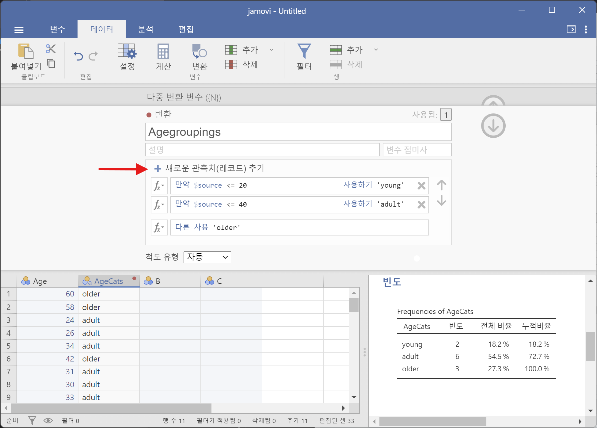
이거 이상하네요. jamovi가 오류를 일으킨 걸까요? 사실, 그렇지 않습니다.4 jamovi는 잘못된 계산을 하는 것이 아닙니다. jamovi가 하는 일을 설명하는 것은 간단하지만, 왜 그런 방식을 선택했는지를 설명하는 것은 조금 더 까다롭습니다. 우선 “무엇을” 하고 있는지부터 시작해 보겠습니다. jamovi는 위에서 설명한 공식 대신 약간 다른 공식을 사용하고 있습니다. 제곱 편차를 평균하는 데이터 개수 \(N\) 대신 \(N - 1\)로 제곱 편차를 나눕니다.
[추가 기술적 세부사항[^04-descriptive-statistics-8]]
즉, jamovi가 사용하는 공식은 다음과 같습니다:
\[\frac{1}{N-1} \sum_{i=1}^{N} ( X_i - \bar{X} )^2\]
이것이 jamovi가 분산에 대해 “무엇을” 하고 있는지에 대한 대답입니다. 진짜 질문은 왜 jamovi가 \(N - 1\)로 나누고 \(N\)으로 나누지 않는가입니다. 결국, 분산은 평균 제곱 편차여야 하므로 \(N\)으로 나눠야 하지 않을까요? 맞습니다, 그렇게 해야 합니다. 하지만, Chapter 8 에서 논의할 예정이듯이, “표본을 설명”하는 것과 “표본이 나온 모집단을 추정”하는 것 사이에는 미묘한 차이가 있습니다. 지금까지는 이 차이가 중요하지 않았습니다. 표본을 설명하든 모집단을 추론하든 평균은 동일한 방식으로 계산됩니다. 그러나 분산, 표준 편차, 기타 여러 측도는 그렇지 않습니다.
처음에 설명한 방식(즉, 실제 평균을 계산하므로 \(N\)으로 나누는 것)은 표본의 분산을 계산하려는 의도를 전제로 합니다. 하지만 대부분의 경우, 여러분은 표본 자체보다는 표본이 세상에 대해 알려주는 것에 더 관심이 있습니다. 그렇다면 여러분은 “표본 통계”를 계산하는 것에서 “모집단 모수”를 추정하는 개념으로 전환하고 있는 것입니다. 그러나 이는 다소 앞서가는 이야기입니다. 지금은 jamovi가 제대로 하고 있다고 믿고, 나중에 Chapter 8 에서 이에 대해 다시 논의하겠습니다.
마지막으로 한 가지 더 있습니다. 이 절은 마치 추리소설처럼 진행되었습니다. 분산 계산 방법을 보여주고, jamovi의 “\(N - 1\)”이라는 이상한 계산 방법을 설명하고, 그 이유를 암시했지만, 가장 중요한 점을 언급하지 않았습니다. 분산을 어떻게 해석해야 할까요? 기술 통계는 결국 어떤 것을 요약하여 설명하기 위한 것이며, 현재로서는 분산이 단순히 난해한 숫자처럼 보입니다. 안타깝게도, 분산에 대한 인간 친화적인 해석을 소개하지 않은 이유는 그것이 사실상 존재하지 않기 때문입니다. 이것이 분산의 가장 심각한 문제입니다. 분산은 변동성을 나타내는 기본적인 양이라는 수학적 속성은 우아하지만, 실제로 인간과 소통하기에는 완전히 쓸모가 없습니다. 분산은 원래 변수의 관점에서 보면 해석이 완전히 불가능한 물건입니다. 모든 숫자가 제곱되었기 때문에 더 이상 원래의 의미를 갖지 않게 됩니다. 이는 큰 문제입니다. 예를 들어, Table 4.3 에 따르면 경기 1의 마진은 “평균 마진보다 376.36 포인트 제곱만큼 높았다”고 나와 있습니다. 이것은 실제로 들리는 그대로 어리석은 말입니다. 따라서 분산 \(324.64\)를 계산했을 때도 우리는 같은 상황에 처하게 됩니다. 저는 수많은 풋볼 경기를 보았지만, “포인트 제곱”에 대해 말하는 사람은 본 적이 없습니다. 이는 실제 측정 단위가 아니며, 분산이 이 난해한 단위로 표현되기 때문에 인간의 해석에서는 전혀 의미가 없습니다.
4.2.5 표준편차
자, 이제 분산을 사용하는 것이 설명되지는 않았지만 수학적으로 유용한 특성들 때문이라고 가정해 봅시다. 하지만, 당신은 로봇이 아니라 인간이기 때문에 데이터 자체의 단위(예: 점수 마진이지 점수 마진의 제곱은 아님)로 표현된 측정을 원할 것입니다. 이 문제를 어떻게 해결할 수 있을까요? 해결책은 명확합니다! 표준편차(standard deviation), 즉 “평균 제곱근 편차(root mean squared deviation)”를 사용하면 됩니다. 이는 분산에 제곱근을 취한 값입니다. 이 방법은 문제를 깔끔하게 해결합니다. “324.68 포인트 제곱의 분산”이 무엇을 의미하는지 아무도 알 수 없지만, “18.01 포인트의 표준편차”는 데이터의 원래 단위로 표현되기 때문에 훨씬 이해하기 쉽습니다. 표본 데이터의 표준편차는 일반적으로 \(s\)로 표시되지만, 때로는 “sd”나 “std dev.”라는 표현도 사용됩니다.
표준편차는 분산의 제곱근이므로, 공식을 보면 놀라지 않을 것입니다:
\[s=\sqrt{\frac{1}{N} \sum_{i=1}^{N} ( X_i - \bar{X} )^2 }\]
jamovi에서 ‘표준편차’ 체크박스는 ‘분산’ 체크박스 바로 위에 있습니다. 이를 체크하면 표준편차 값으로 \(26.07\)을 얻습니다.
하지만, 분산에서 이미 살펴본 것처럼, jamovi가 실제로 계산하는 방식은 위 공식과 약간 다릅니다. 분산에서 보았던 것처럼 jamovi는 \(N\)이 아닌 \(N - 1\)로 나누는 방식을 사용합니다.
이 새로운 값을 \(\hat{\sigma}\) (시그마 햇)이라고 부르며, 그 공식은 다음과 같습니다:
\[\hat{\sigma}=\sqrt{\frac{1}{N-1} \sum_{i=1}^{N} ( X_i - \bar{X} )^2}\]
표준편차를 해석하는 것은 조금 더 복잡합니다. 표준편차는 분산에서 유도되며, 분산은 인간에게 직관적으로 이해하기 어려운 값이기 때문에, 표준편차 역시 단순히 해석하기는 어렵습니다. 그래서 대부분의 경우 우리는 간단한 경험적 규칙에 의존합니다. 일반적으로, 평균에서 1 표준편차 이내에 데이터의 68%가 포함되고, 2 표준편차 이내에 95%, 3 표준편차 이내에 99.7%가 포함된다고 예상할 수 있습니다. 이 규칙은 대부분의 경우 잘 맞지만, 정확하지는 않습니다. 이는 히스토그램이 대칭적이고 “종 모양”이라는 가정을 기반으로 계산됩니다. Figure 4.2 에서 볼 수 있듯이, AFL 승리 마진 데이터의 히스토그램은 이 가정에 완전히 부합하지는 않습니다. 그럼에도 불구하고 이 규칙은 대략적으로 맞습니다. 실제로, afl.margins 데이터의 65.3%가 평균에서 1 표준편차 이내에 포함됩니다. 이는 Figure 4.10 에서 시각적으로 나타나 있습니다.
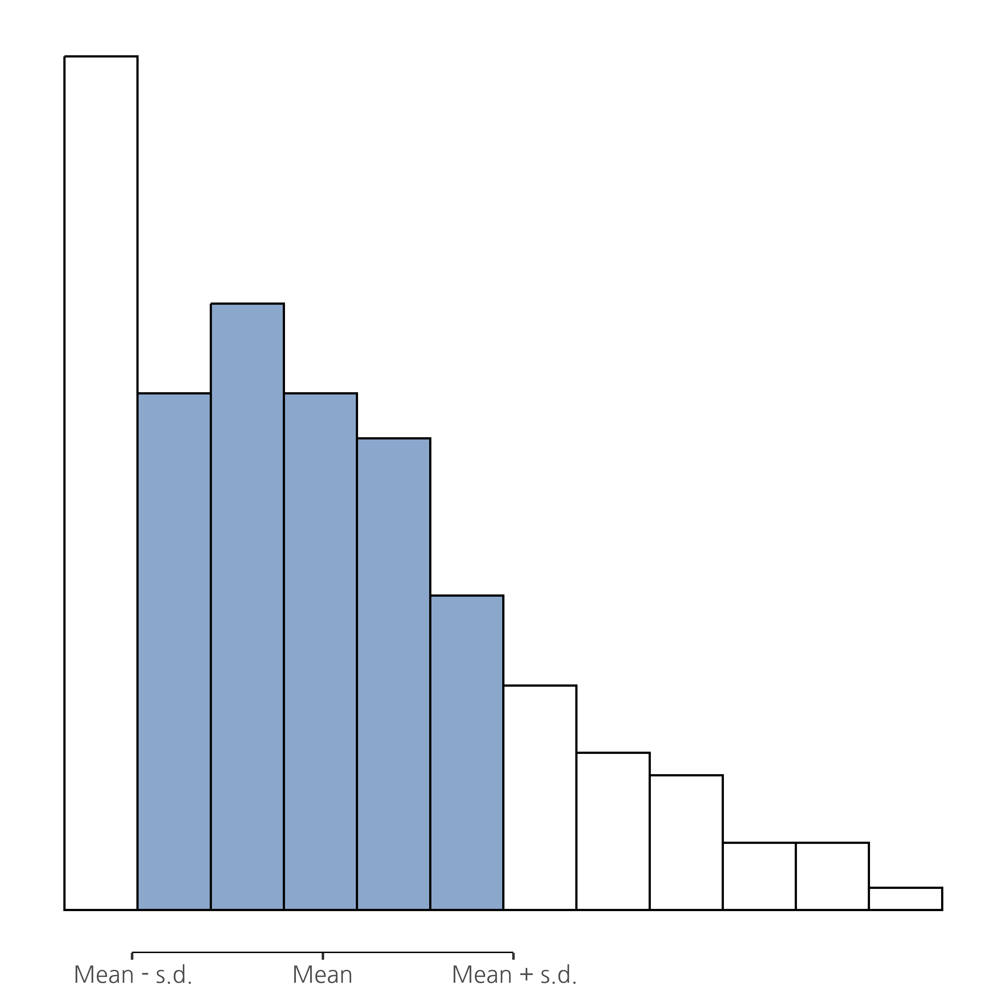
4.2.6 어떤 측정값을 사용해야 할까?
데이터 변동성을 나타내는 여러 측정값을 살펴보았습니다: 범위(range), IQR(사분범위), 평균 절대 편차(mean absolute deviation), 분산(variance), 표준편차(standard deviation)의 장단점도 살펴보았습니다. 각 측정값에 대해 배운 내용을 요약해 봅시다.
- 범위(range): 데이터의 전체 범위를 얄려줍니다. 특이치(outlier)에 매우 민감하며, 데이터의 극단값에 특별히 관심이 있을 때를 제외하면 자주 사용되지 않습니다.
- 사분범위(IQR): 데이터의 “중간 부분 절반”이 어디에 위치하는지 알려줍니다. 특이치에 상당히 강건하며, 중앙값과 잘 어울립니다. 많이 사용됩니다.
- 평균 절대 편차(mean absolute deviation): 관측값들이 평균에서 “평균적으로” 얼마나 떨어져 있는지를 알려줍니다. 해석이 매우 직관적이지만, 통계학자들이 표준편차를 더 선호하는 몇 가지 이유가 있습니다(여기에서는 논의되지 않음). 가끔 사용되지만 흔하지는 않습니다.
- 분산(variance): 평균으로부터의 제곱 편차에 대한 평균을 계산합니다. 수학적으로 우아하며, 평균 중심의 변동성을 설명하는 “올바른” 방법일 수 있습니다. 하지만 원래 데이터와 같은 단위를 사용하지 않기 때문에 해석이 완전히 불가능합니다. 수학적 도구로는 거의 항상 사용되지만, 일반적으로는 대다수의 통계 도구에서 눈에 보이지 않는 방식으로 사용됩니다.
- 표준편차(standard deviation): 분산의 제곱근입니다. 수학적으로 꽤 우아하며, 데이터와 동일한 단위로 표현되므로 해석하기 쉽습니다. 평균이 중심 경향성의 척도일 때 기본적으로 사용됩니다. 변동성을 나타내는 가장 인기 있는 측정값입니다.
결론적으로, IQR과 표준편차는 데이터 변동성을 보고할 때 가장 흔히 사용되는 두 가지 측정값입니다. 하지만 다른 측정값들이 사용되는 상황도 있습니다. 이 책에서 모든 측정값을 설명한 이유는 이들 대부분을 어디선가 접할 가능성이 크기 때문입니다.
4.3 왜도와 첨도
심리학 문헌에서 가끔 보고되는 기술 통계량에는 두 가지가 더 있습니다. 바로 왜도(skew)와 첨도(kurtosis)입니다. 실무적으로는 우리가 논의했던 중심 경향과 변동성 측정치만큼 자주 사용되지는 않습니다. 왜도는 상당히 중요해서 꽤 자주 언급되지만, 저는 지금까지 과학 논문에서 첨도를 보고한 사례를 한 번도 본 적이 없습니다.
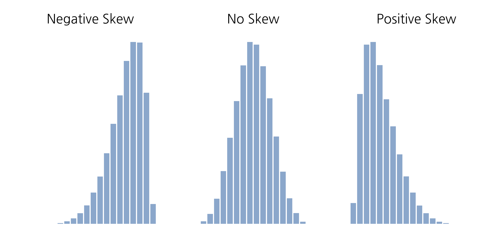
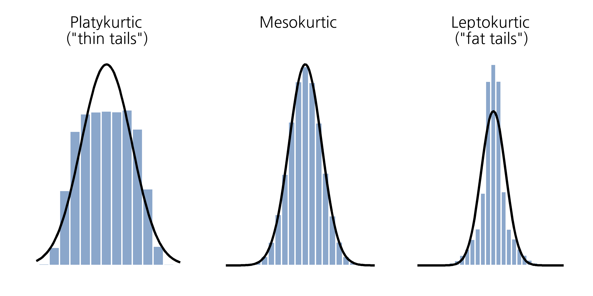
더 흥미로운 주제이기 때문에 왜도(skewness)부터 시작해 봅시다. 왜도는 기본적으로 분포의 비대칭성을 측정하는 지표이며, 이를 가장 쉽게 설명하는 방법은 그림을 그려보는 것입니다. Figure 4.11 에 나타난 바와 같이, 데이터에 극단적으로 작은 값이 많고 (즉, 왼쪽 꼬리가 “더 길고”) 극단적으로 큰 값이 적다면(왼쪽 그래프) 데이터를 음의 왜도를 보인다고 합니다. 반대로, 극단적으로 큰 값이 더 많다면(오른쪽 그래프) 데이터를 양의 왜도를 보인다고 합니다. 즉, 평균보다 훨씬 큰 값이 상대적으로 많으면 분포가 양의 왜도를 가지며 오른쪽 꼬리가 길어집니다. 음의 왜도는 그 반대입니다. 대칭 분포는 왜도가 0입니다. 양의 왜도를 가지는 분포의 왜도 값은 양수이고, 음의 왜도를 가지는 분포는 음수입니다.
데이터 세트의 왜도를 계산하는 한 가지 공식은 다음과 같습니다:
\[skewness(X)=\frac{1}{N \hat{\sigma}^3} \sum_{i=1}^{N} ( X_i - \bar{X})^3\]
여기서 \(N\)은 관측값의 수, \(\bar{X}\)는 표본 평균, \(\hat{\sigma}\)는 표준편차(\(N - 1\)로 나눈 버전)입니다.
jamovi를 사용하면 왜도를 쉽게 계산할 수 있습니다. 이는 ‘기술통계’-‘기술통계’-’통계’의 옵션 체크 박스에서 ’왜도’를 체크합니다. afl.margins 변수의 경우, 왜도값은 \(0.780\)입니다. 왜도 추정값을 왜도의 표준오차로 나누면 데이터가 얼마나 치우쳐져 있는지 나타낼 수 있습니다. 특히 작은 표본(N \(<\) 50)에서는, 이 값이 2 이하라면 데이터가 크게 치우치지 않았다고 보고, 2 이상이라면 데이터가 치우쳐 분포되어 일부 통계 분석이 어려울 가능성이 있다고 간주할 수 있습니다. 하지만 이 해석에 대한 명확한 합의는 없습니다. 그럼에도, AFL 승리 마진 데이터는 다소간 치우쳐 있음을 나타냅니다(\(\frac{0.780}{0.183} = 4.262\)).
마지막으로, 실무에서는 매우 드물게 언급되지만 첨도(kurtosis)가 있습니다. 첨도는 단순히 분포 꼬리가 얼마나 얇거나 두꺼운지를 나타내는 지표입니다. Figure 4.12 에 설명된 바와 같이, 관례적으로 정규 곡선(검은 선)은 첨도 0을 가지며, 첨도는 이 곡선을 기준으로 평가됩니다. 그림에서 왼쪽 데이터는 분포가 평평하고 꼬리가 얇아서 첨도가 음수이며 이를 편첨도(platykurtic)라고 부릅니다. 오른쪽 데이터는 꼬리가 두꺼운 분포로 첨도가 양수이며 이를 첨첨도(leptokurtic)라고 합니다. 가운데 데이터는 꼬리가 얇거나 두껍지 않아서 중첨도(mesokurtic)이고 첨도가 0입니다. 이 내용은 Table 4.4 에 요약되어 있습니다.
| 일상언어 | 비공식 용어 | 첨도 값 |
|---|---|---|
| \(\text{``}\)꼬리가 너무 얇음\(\text{''}\) | 편첨도 (platykurtic) | 음수 |
| \(\text{``}\)꼬리가 보통\(\text{''}\) | 중첨도 (mesokurtic) | 0 |
| \(\text{``}\)꼬리가 너무 두꺼움\(\text{''}\) | 첨첨도 (leptokurtic) | 양수 |
첨도의 공식은 분산 및 왜도 공식을 연상시키며, 제곱 편차를 사용하는 분산과 세제곱 편차를 사용하는 왜도와 달리 네제곱 편차를 사용합니다.
\[kurtosis(X)=\frac{1}{N \hat{\sigma}^4} \sum_{i=1}^{N} ( X_i - \bar{X} )^4 - 3\]
“-3” 부분은 정규 곡선이 첨도 0을 가지도록 하기 위해 통계학자들이 추가한 부분입니다. 공식 끝에 “-3”을 붙이는 것이 조금 이상해 보일 수 있지만, 이를 이렇게 하는 데는 타당한 수학적 이유가 있습니다.
우리에게 중요한 점은, jamovi에 첨도를 계산할 수 있는 체크 박스가 있으며, 이는 왜도 체크 박스 바로 아래에 있습니다. afl.margins는 첨도 \(0.101\)과 표준 오차 \(0.364\)를 제공합니다. 이는 AFL 승리 마진 데이터는 작은 첨도를 가지고 있어서 큰 문제가 없음을 의미합니다.
4.4 집단으로 나누어 기술통계량 구하기
집단(을 나누는) 변수에 따라 집단을 나누어 기술통계량을 살펴봐야 할 때가 많습니다. jamovi에서는 이를 비교적 간단히 수행할 수 있습니다. 예를 들어, 특정 임상 시험 데이터에서 치료 유형 별로 나누어 기술통계량을 확이해 보고 싶다고 해봅시다. 설명을 위해 새로운 데이터 세트를 사용해 봅시다. 이 데이터는 clinicaltrial.csv 파일에 저장되어 있으며, 나중에 Chapter 13에서 많이 사용될 것입니다(해당 장의 시작 부분에서 데이터에 대한 전체 설명을 찾을 수 있습니다). 이를 로드하여 무엇이 있는지 확인해 봅시다 (Figure 4.13).
실습: Clinical Trial 데이터 불러오기
이 실습을 하려면 Tip 3.1 을 수행하여 lsj-data 모듈이 설치되어 있어야 합니다.
‘파일’-‘열기’-’데이터 라이브러리’를 메뉴에서 선택합니다. 그러면 ’learning statistics with jamovi’라는 폴더가 보일 것입니다. 이 폴더를 선택합니다. 이미 이전에 이 폴더를 사용하여 이미 선택되어 있을 수 있습니다.
데이터 라이브러 목록에서 ’Clinical Trial’을 선택합니다. 그러면 Figure 4.13 같은 데이터가 스프레드시트 뷰에 나타납니다.
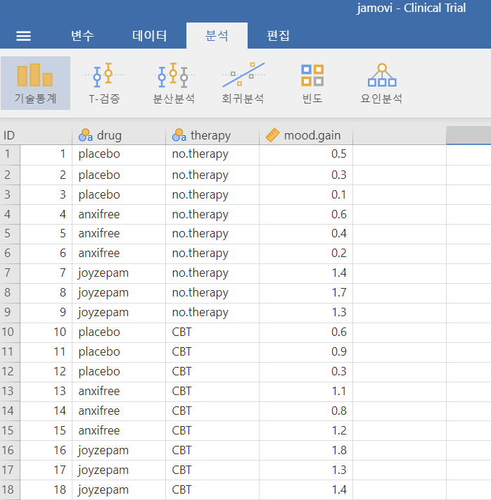
이 데이터에는 세 가지 약물이 있었던 것으로 보입니다: 플라시보, “anxifree”라는 약물, 그리고 “joyzepam”이라는 약물입니다. 각 약물은 6명에게 투여되었습니다. 또한, 9명은 인지행동치료(cognitive behavioral therapy; CBT)를 받았고, 9명은 이러한 심리 치료를 받지 않았습니다. 그리고 mood.gain 변수의 ‘기술통계’ 결과를 보면 대부분의 사람들이 기분 향상을 보였다는 것을 알 수 있습니다(\(mean = 0.88\)). 하지만 이 척도의 구체적인 의미를 알 수 없으므로 그 이상의 해석은 어렵습니다. 그래도 나름 의미 있는 정보를 얻은 것 같네요.
이제 다른 기술통계량도 살펴보겠습니다. 이번에는 치료 유형별로 나누어서 살펴보겠습니다. jamovi에서 ‘통계’ 옵션에서 표준 편차(Std. deviation), 왜도(Skewness) 및 첨도(Kurtosis)를 선택합니다. 동시에 therapy 변수를 ‘Split by’ 상자로 이동하면 Figure 4.14 같은 결과를 얻을 수 있습니다.
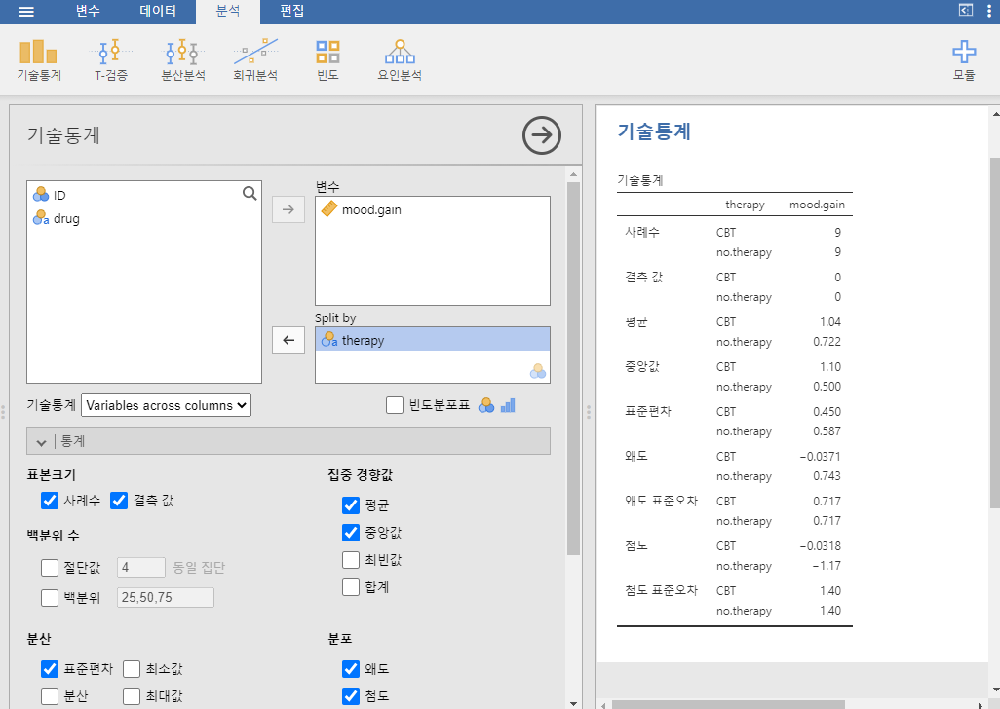
집단 변수가 여러 개인 경우는 어떻게 해야 할까요? 예를 들어 약물과 치료의 모든 가능한 조합에 따라 평균 기분 향상을 살펴보고 싶다고 합시다. 이를 위해 ‘Split by’ 상자에 drug 변수를 추가하면 됩니다. 매우 간단합니다. 다만, 너무 세분화하면 각 조합에 데이터가 충분하지 않아 의미 있는 계산을 수행할 수 없을 수도 있습니다. 이 경우 jamovi는 ‘NaN’ 또는 ’Inf’와 같은 메시지로 이를 알려줍니다.5
4.5 표준 점수
제 친구가 “짜증 정도”를 측정하기 위해 새로운 설문지를 만들고 있다고 가정해 봅시다. 이 설문은 짜증나는 방식으로 대답할 수 있는 50개의 질문으로 구성되어 있습니다. 대규모 표본(가령 약 백만 명)을 대상으로 했을 때, 데이터는 대체로 정규 분포를 따르며 평균 짜증 점수는 50개의 질문 중 17개를 짜증스럽게 답한 것으로 나타났고, 표준 편차는 5였습니다. 반면, 제가 이 설문을 했을 때 50개 중 35개를 짜증스럽게 대답했습니다. 그렇다면 저는 얼마나 짜증이 난 건가요?
하나의 접근 방식은 \(\frac{35}{50}\)로 계산하여 제가 “70% 짜증났다”고 표현하는 것입니다. 하지만, 이 방식은 약간 이상합니다. 질문의 표현 방식이 달라지면 사람들이 다르게 답할 수도 있어서 전체적인 답변의 분포가 달라질 수 있기 때문입니다. 따라서 이 설문을 기준으로 저는 70% 짜증났다는 것은 그리 유익한 진술이 아닙니다.
이 문제를 해결하는 더 간단한 방법은 저의 짜증을 다른 사람들과 비교하는 것입니다. 놀랍게도, 제 친구의 백만 명 표본 중 저처럼 짜증난 사람은 단 159명뿐이었습니다. 이는 제가 상위 0.016%에 속한다는 것을 의미하며, 이런 방식이 원시 데이터를 해석하는 것보다 훨씬 이해하기 쉽습니다. 제 짜증을 인간의 전체 짜증 분포를 기준으로 설명해야 한다는 아이디어는 표준화라는 개념을 정성적으로 설명하고 있습니다. 제가 방금 한 것처럼 모든 것을 백분위로 설명하는 방식도 하나의 방법입니다. 그러나 이런 방식에는 문제가 있습니다. “정상에 서면 외로워진다”는 말처럼, 제 친구가 1,000명의 표본만 수집했다고 가정해 보겠습니다(새로운 설문지를 테스트하기에는 여전히 꽤 큰 표본입니다). 이 경우 평균은 50개 중 16개를 짜증스럽게 답한 것으로 나타나고, 표준 편차는 5였습니다. 그러나 이 표본에는 저처럼 짜증난 사람은 거의 없을 가능성이 큽니다. (그러므로 저를 백분율로 표현할 수도 없습니다.)
하지만, 이것으로 모든 것이 끝난 것이 아닙니다. 다른 접근 방법으로 제 짜증 점수를 표준 점수(standard score), 또는 \(z\)-점수로 변환하는 것입니다. 표준 점수는 제가 얻은 짜증 점수가 평균에서 얼마나 많은 표준 편차만큼 떨어져 있는지를 나타냅니다. 이를 수식으로 표현하자면 다음과 같습니다:
\[\text{표준 점수} = \frac{\text{원점수} - \text{평균}}{\text{표준 편차}}\]
실제 수학으로는, \(z\)-점수 공식은 다음과 같습니다:
\[z_i =\frac{X_i - \bar{X}}{\hat{\sigma}}\]
따라서, 다시 짜증 데이터로 돌아가면 제 원점수를 표준화된 짜증 점수로 변환할 수 있습니다: \[z =\frac{35 - 17}{5} = 3.6\]
이 값을 해석하기 위해, Section 4.2.5에서 언급했던 대략적인 기준을 기억하는 게 도움이 됩니다. 평균에서 3 표준 편차 내에 대략적으로 99.7%의 값이 분포된다고 했습니다. 따라서 제 짜증 점수가 \(z\)-점수 3.6에 해당한다는 것은 제가 매우 짜증이 난 상태라는 것을 의미합니다. 사실, 이는 제가 전체 사람 중 99.98%보다 더 짜증났다는 것을 나타냅니다. 딱 맞는 설명이네요.
표준 점수는 단순히 원점수를 더 큰 집단과 비교하여 해석할 수 있도록 도와줄 뿐만 아니라(이를 통해 임의 적인 척도에서 측정된 변수를 표준적인 방식으로 이해할 수 있음), 또 다른 유용한 기능이 있습니다. 표준 점수는 원점수로는 비교할 수 없는 상황에서 서로 비교할 수 있도록 해줍니다. 예를 들어, 제 친구가 또 다른 설문을 가지고 있는데, 이는 24개 항목으로 구성된 외향성(extraversion)을 측정하는 설문입니다. 이 설문의 전체 평균은 13이고, 표준 편차는 4입니다. 제가 이 설문에서 받은 점수는 단 2점이었습니다. 아시다시피, 외향성 설문에서 받은 원점수 2와 짜증 설문에서 받은 원점수 35를 서로 비교하는 것은 말이 되지 않습니다. 두 변수의 원점수는 근본적으로 서로 다른 의미를 가지고 있기 때문에 이는 마치 사과와 오렌지를 비교하는 것과 같습니다.
그렇다면 표준 점수는 어떨까요? 이 경우는 조금 다릅니다. 표준 점수를 계산하면 다음과 같은 값을 얻게 됩니다:
- 짜증 점수: \((z = \frac{(35-17)}{5}=3.6)\)
- 외향성 점수: \((z = \frac{(2-13)}{4}=-2.75)\)
이 두 숫자는 서로 비교할 수 있습니다.6 저는 대부분의 사람들보다 외향적이지 않으며(\(z = -2.75\)), 대부분의 사람들보다 훨씬 더 짜증이나 있습니다(\(z=3.6\)). 하지만 짜증과 외향성의 비정상적 정도를 비교해 보면, 짜증이 더 극단적이라는 것을 알 수 있습니다. 왜냐하면 \(3.6\)이 \(2.75\)보다 더 큰 숫자이기 때문입니다. 각 표준 점수는 특정 관찰치가 해당 모집단 내에서 어디에 위치하는지에 대한 진술이기 때문에, 완전히 다른 척도의 변수들 사이에도 표준 점수를 비교할 수 있습니다.
4.6 요약
실제 데이터를 분석할 때 가장 먼저 해야 할 일 중 하나는 기본적인 기술통계량을 계산하는 것입니다. 기술통계는 추론 통계보다 훨씬 간단히 이해할 수 있으므로, 다른 모든 통계 교재와 마찬가지로 이 책도 기술통계로 시작했습니다. 이 장에서는 다음과 같은 주제들을 다뤘습니다:
- 중심 경향 측정: 중심 경향 측정은 데이터의 중심이 어디에 위치해 있는지를 알려줍니다. 문헌에서 일반적으로 보고되는 세 가지 측정치는 평균(mean), 중앙값(median), 최빈값(mode)입니다.
- 변동성 측정: 반대로 변동성 측정은 데이터가 얼마나 “퍼져 있는지”를 알려줍니다. 주요 측정치는 범위(range), 표준편차(standard deviation), 사분범위(interquartile range)입니다.
- 왜도와 첨도: 변수의 분포의 비대칭성(왜도)과 얇거나 두꺼운 꼬리를 가진 분포(첨도)를 살펴보았습니다.
- 집단으로 나누어 기술통계량 구하기: 이 책은 jamovi에서 데이터 분석을 수행하는 데 중점을 두고 있기 때문에, 다양한 하위 집단에 대해 기술통계량을 계산하는 방법에 대해 논의하였습니다.
- 표준 점수: \(z\)-점수는 약간 독특한 성격을 가집니다. 이는 완전한 기술통계량도 아니고 완전한 추론 통계도 아닙니다. 이 절을 반드시 이해하세요. 나중에 이 개념을 다시 만나게 될 것입니다.
다음 장에서는 데이터를 시각화하는 방법을 논의하겠습니다! 모두가 예쁜 그림을 좋아하죠, 그렇죠? 하지만 그 전에 중요한 점을 강조하며 마무리하고자 합니다. 통계학의 전통적인 첫 강의에서는 기술통계에 대해서 비교적 짧은 시간(대개 한두 강의)만을 할애합니다. 대부분의 시간은 추론 통계에 할애되며, 이는 어려운 부분이기 때문입니다. 이것은 이해할 만하지만, 좋은 기술통계 분석의 실질적이고 일상적인 중요성을 간과하게 만드는 경향이 있습니다.
비호주인을 위한 참고: AFL은 호주식 풋볼 대회입니다. 이 섹션을 이해하는 데 호주식 풋볼에 대한 지식은 필요하지 않습니다.↩︎
www.abc.net.au/news/2010-09-24/housing-bubble-debate-boils-over/2273406↩︎
훌륭한 통계적 특성 중 한 가지만 짧게 언급하겠습니다. 분산은 가산적입니다. 이것이 의미하는 바는 다음과 같습니다. \(X\)와 \(Y\)라는 두 변수가 있고, 이들의 분산이 각각 \(Var(X)\)와 \(Var(Y)\)라고 합시다. 이제 \(Z = X + Y\)라는 새로운 변수를 정의한다고 가정합니다. 이 경우 \(Z\)의 분산은 \(Var(X) + Var(Y)\)와 같습니다. 이는 매우 유용한 속성이지만, 이 섹션에서 다루는 다른 측도들에는 해당되지 않습니다. (역주: 이러한 성질이 성립하려면 \(X\)와 \(Y\)의 상관계수가 0이어야 합니다.)↩︎
세 번째 질문을 제외할 수 있는 경우에만 해당합니다.↩︎
jamovi가 숫자를 비일상적인 방식으로 표현하는 경우도 있습니다. 숫자가 매우 작거나 매우 큰 경우, jamovi는 숫자를 지수 형태로 전환합니다. 예를 들어, 6.51e-4는 소수점을 왼쪽으로 4자리 이동한 0.000651을 의미합니다. (역주: \(6.51 \times 10^{-4}\)을 의미한다.) 반대로 6.51e+4라면 소수점을 오른쪽으로 이동하여 65,100.00이 됩니다. (역주: \(6.51 \times 10^{4}\)을 의미한다.) 일반적으로 매우 작거나 큰 숫자에만 이런 방식이 사용됩니다. 예: 6.51e-16 (이는 일반적인 방식으로 작성하기에는 너무 번거롭습니다).↩︎
그러나 주의가 필요합니다. 변수 A의 1 표준 편차가 변수 B의 1 표준 편차와 동일한 “종류”의 것을 의미하지 않을 수도 있습니다. 두 변수의 \(z\)-점수를 비교하는 것이 의미가 있는지를 판단할 때는 상식적 판단이 필요합니다.↩︎